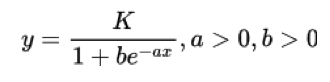

比特币研究：寻找中本聪系列【十三】——比特币自然成长曲线
特邀作者：祝维沙，知名华人企业家

为了便于理解，增加一些金融基础概念解释。与前面文章有些重复，理解的读者可以跳过，从第13.2 节法币的缺陷开始阅读。
13.1 基础概念
金融学是人人都在用的学问，似乎是门槛很低人人都懂的学问。正是因为用途普遍，研究者众多，所以学派林立。每一个基本概念都有不同的学派的解释，似乎都有道理。由于金融理论是以社会作为实验室，短期有效长期不一定有效，造成鸡和鸭讲的局面。我们提出的是金融最基本问题，要对有歧义的基本概念词，给出本文的定义和解释。
1.什么是价值？
价值是主观的。价值取决于个人的看法，就像女孩子的脸蛋，有人觉得漂亮有人觉得丑。价值是个人的判断标准。
2.什么是共识？
在一个地区会对某人是否漂亮产生相对统一的看法，这就是共识。共识就是一致的价值认同。
共识大小的度量是：局部共识，普遍共识和全球共识。
目前比特币是普遍共识。普遍共识并没有数量上的定义，遵从“普遍”一词的字面定义。
资产价值的共识是一种特定的共识，叫资产共识。本文所指的共识是资产共识。资产共识的度量是人数和钱数。人头共识是人数多少，钱的共识是市值。比特币的共识属于资产共识。
共识有时间性，达成共识时间长，意味共识的寿命也长。黄金达成共识的时间不少于500年。比特币达成共识的时间是132年。
共识有条件性，当条件改变了共识会改变。环肥燕瘦便反映中国不同朝代审美标准的不同，也就是共识的不同。当时的皇帝的喜好是促使共识改变的人。
3.劳动可以创造价值，但是价值不仅仅是劳动创造的。
成本代表了广义的劳动，包括各种投入，后面将用成本一词，而不用劳动一词。
4.价值分为使用价值和资产价值。
有资产价值的东西，使用价值不一定高，比如钻石、黄金和比特币，他们的使用价值都远远低过水、空气和阳光。反过来说，使用价值高的东西，资产价值不一定高。下面本文出现的价值如果不特指，都是指资产价值。
5.什么是资产价值？
代表成本的凝结。无形资产的价值也代表成本的凝结。换句话说没有成本没有资产价值。楼房的朝向不同，采光不同，价格不同。阳光的使用价值并没有变，影响售价的是房屋位置的稀缺性。改变了阳光的使用条件。
6.什么是交易？
交易建立在需求基础上，对于资产价值的不同看法产生了交易。双方在达成交易的那一刻，就是价格产生或价格认同。都认为自己赚了。原因是对物品未来的价值看法不同。
7.什么是价格？
价格是对价值定价。价格有不同的定价单位.
8. 什么是定价单位？
货币是一种定价单位。
9.什么是货币？
货币分为资产币和信用币。
10.什么资产币？
背后有价值背书的叫资产币。币后面资产的硬度决定资产币的价值。资产分有形资产，无形资产，当前资产和未来资产等，硬度都不同，高于黄金硬度的资产是比特币。
11.什么是信用币？
信用币靠信用背书，信用尽管是无形的，也是资产价值叫信用价值。信任价值不是内含价值，内含价值是具有已经被共识的价值，比如黄金。信用价值是未来能够实现的价值，比如税收。未来价值的可实现性越高，信用就越高。政府强权也是信用，政府强权信用的硬度再好都小于税收。税收可实现性很高，接近有形资产。政府信用与货币通胀对应。如果法币只对应政府权力，那么权力产生的信用可以用通胀率直接度量。
12.什么是法币？
法币是信用币的一种，区别在于信用的大小。美元是信用最高的法币，是用国家税收作为信用背书，实际上当资产只持有不卖出时，资产税收无法实现。当大量的美元流入资本市场，不发生交易，美国政府就收不到税。实业一般是稳定的税源，会有稳定的税收，资产持有不是稳定的税源，是不确定的税收，使得发出法币和税收之间并不能取得平衡。解决的办法是提高税率，但又破坏了实体经济的自然平衡；再有就是借新还旧，债务越滚越大。时至今日：“央行已经没有能力处理因为央行本身积累的货币金融规模问题”。（2）这就是美国的现状。事实上，法币对当代经济发展有功，但是问题非常大。
法币的的信用最主要的指标是全球流动性，可以全球流动的法币本身的价格才是真实的价格。
13.什么是空气币？
空气币也是一种信用币，特指在区块链中出现的币。第一种是根据商业计划发出的币，类似风投的种子轮，如果故事不能兑现，币没有资产背书，信用也破产了，币的价值归零，如同空气一样。第二种空气币是有成本，没有交易，拿在手里如同废纸一样。空气币到资产币是可以转换的。第一种要加大投入，做出价值。第二种很简单，交易就有价值了。比特币属于第二种情况。
14.一个物品的价格如何确定？
前面说过取决于交易。那么价格是如何产生的？它的当前价格是参考之前交易的价格决定的。由此步步可回归到没有交易的最初状态。在没有发生交易之前，一定是有成本的。空气和阳光都没有成本，也就没有资产价值，因此是免费的。这是米塞斯回归定律最基本的原理。赌博也有成本，这时的价格不是给物品定价。
15.什么是资产价值的衡量标准？
成本和需求决定价格。这两点合起来产生了稀缺性。物以稀为贵，人类几千年来形成的共识。当很多人都认为该物有价值，意味共识普遍，就愿意保留起来供日后交换用，因为容易出手。共识越普遍意味需求越多，当需求远大于供给，就会产生稀缺性。同样道理成本越高，越不容易生产，黄金的开采就是如此。我们在衡量资产价值的大小就是在衡量资产价值所包含的稀缺性。
16.使用价值如何衡量？
衡量使用价值中含有的资产价值。即使用价值中含有的稀缺性。我们所交易的使用价值，是在交易使用价值中的资产价值。它度量的是资产的稀缺性，没有稀缺性共识不能长久。无论有形资产还是无形资产都是度量稀缺性。只是一些无形资产很难精确度量其稀缺的程度。政府的强权具有独占性，也是稀缺的，所以也有资产价值。但是其价值比较模糊。法币和政府权力并不相等。
17.什么是稀缺性？
细分有很多特性，构成资产价值度量的方方面面。要记住的最主要的特性有两个：稀有、永恒。人们不会因保存该物而遭受损失。也就是该物具备了保存价值的能力。保存价值的能力叫储值价值，具有储值价值的物品容易成为了交易的媒介。
18. 什么叫交易媒介？
用于衡量其他资产和商品的价值。也就是货币。黄金就是由于具备全球认同的储值价值，所以成为法币之前的交易媒介。交易媒介有很多种，贝壳，巨石、黄金和白银都做过。
把上述概念总结如下;
1. 价值凝结成本，没有成本没有价值。
2. 价值的大小是主观判断，通过交易确认价值。
3. 共识是群体对价值的一致性判断。共识是时间的函数。
4. 成本是价值判断的一个标准。
5. 需求是价值判断的另一个标准。
6. 稀缺性中的不变性和永恒性，提供了资产价值的支撑。
7. 所以人类选择了具有稀缺性的黄金作为货币，但黄金不适合现代经济发展。
8. 货币是资产价值的代表，是人类最广泛的需求。成为了交易的媒介。它有资产币、信用币和空气币之分。
9. 法币是一种信用币。法币对当代经济发展有功，但是问题非常大。
10. 比特币具有超越黄金的特性适合作为储备货币。
以上概念属于主观看法，属于共识的范围。
13.2 法币的缺陷
法币是靠信用背书的。信用是无形资产。各种法币凝结的成本不同，信任也不同。法币的信用有两个来源：
1.未来可实现的价值，越确定信任度越高。
2.政府权力。越确定后果，信任度越高。
可以实现的价值一般是确定性债务背书，理论上受费雪公式的约束。权力干预是对自身生态的管理方法。权力大到极致，货币就是票证。区块链去信任，去管理。无实际控制人的系统是好系统。有人就有作恶的可能性。
13.2.1 人民币的代用券性质
要讲清楚这个问题，是长篇大论。这里只是从区块链生态的角度，进行简要的讨论。
早期的粮票，布票，油票都没有内含价值，它的价值就是权力的价值。早期的人民币相当于生态的积分。积分要劳动才能赚取，有内涵价值。通用性上好过粮票布票。改革开放，锚定外汇发币，增强了人民币的信用。注意信用的增加在于背后的价值背书。
一个法币是否是交易媒介要看它是否可以自由交易，可否全球自由流通，不符合或只部分符合这个要求，严格地说不是货币，只是生态内部的代用券。出了圈就没有人承认。该货币交易价格是庄家市场操纵结果，而不是市场价格。
人民币有外汇管制如同生态管制，就如一只坐庄的股票，价格的高低，庄说了算。庄通过调价汇率价格，调节生态内各方的利益，以及国际市场的人民币的竞争力。汇率管制造成人民币的价格不真实。
由于汇率非市场化，观察中国的GDP和进出口数据可以粗略判断人民币的汇率是否合理。这又取决于数据的真实性。
绑定外汇的发行机制透明这是优点，但是不科学。
政府发债方式，相当于公司贷款，要看偿债能力。此路美国都走死了，无外乎另一个庞氏。下一节我们讨论美国的情况。世界需要有新的出路。
人民币的价值成长来源于资产价值的背书，死守3万亿美元，是维持人民币价值的底线。
中国的楼市的楼价高企吞吃了超发的货币，中国的楼市没有房产税，没有产生相应的足够税收，政府的发钞增长和楼市价格上涨成了直接对应关系。楼市不涨，没有购买，大量增发的货币变成了钢筋水泥，成为不容易流动的死资产。没有楼市交易税，没有了房地产各个环节的税收，财政大窟窿。这时地方债也拿来做央行的发币背书，这个债到底是否有税收背书无从知晓，若没有，便与无锚发币相差不远。写数字就能赚钱，就是通货膨胀的根源。
管制一定有效，但只是保证不死而已，好就不要想了。
另一条路是盘活手中的资产让人民币有长期资产背书。
中国政府有很多资产，不同于美国政府，是一个大财主。但是资产质量不明确，和人民币的背书关系不明确。大量可提供信用的资产没有发挥作用。如果明确就有可能诞生强势人民币。中国的法币和政府持有资产没有关系。区块链的资产币有不同的背书情况，可供中国决策者参考。关键是他们用已有的老知识去判断新问题，在人类发展的关键时刻抛弃了自己不懂的区块链。
13.2.2 港币设计的科学性
如果把香港看成一个生态，港币就类似于区块链生态的稳定币。在当代研究金融，如果不研究区块链，不懂区块链，就像是在物理学的研究中只研究理论物理，而不重视实验。正是实验推动了当代物理学的发展，从而推动了世界的科学发展。当代金融要发展，同样要有实验，要有实验室模拟。今天和未来金融可能出现的乱象在区块链都实验过了，只需总结就好。
从区块链来看央行，是一个节点发币。刚刚崩盘的区块链算法稳定币Luna（UST）也是一个节点发币。说起来，央行整个发币机制的科学性低于算法稳定币UST。可惜算法稳定币没有强权作为救助机制。所谓科学性低，在于发币的随意性，不是算法决定是人决定。
港币就是比较好的算法稳定币，人在其中的作用是执行算法。还有是在算法出现问题时进行救助。比如对索罗斯的斗争。另一个角色是分析自己的经济体是否可以支持联系汇率，也就是储备货币是否可以抵御风险。一般来说，港币的支撑问题不大，因为他是大财主，香港的土地都是它的，香港房价是市场价格，目前的风险来自金融中心地位的破坏，从而引起市场的担忧。香港在资产的利用上做得好，产生低税率地区。从而为资金的流入创造了条件。
香港的联系汇率也有庄家，但是政策透明。港币可以自由兑换，所以港币是货币，人民币是代用券。代用券同样有信用，只是信用比较低。
13.2.3 美元一堆烂苹果中的好苹果
美元之所以强势，在于美元的设计不是强权背书，也没有外汇管制，是世界的结算货币之一，也是结算系统的主导者。美元背书的资产质量已经具有高度不确定性，只是在一堆烂苹果当中是最好的。如果硬要有一个价值标尺，只好用美元了。美元的问题市场都看得到。
“据美媒零对冲在6月20日报道称，美国西弗吉尼亚州有位叫亚历克斯穆尼（ALEX MOONEY）的议员再次向众议院提交了一项新法案，试图将美国的货币体系重新恢复到金本位制。他提出的解决办法是控制美联储的货币供应量，将黄金价值重新注入美元，并将其决定权交还给美国市场，换句话说就是回到金本位制。穆尼在向美财政部再次提交的一份有关建议应恢复金本位的方案中提到，自1913年以来美元已经丧失了97%的价值，平均每过一代人美元就会失去50%的购买力。”
“华尔街预言家彼得·希夫在6月25日对美国金融网站Zerohedge表示，现在包括美联储官员及华尔街精英等在内的各方已经对美国经济将衰退形成共识的环境下，这将成为这次美元收缩的开始，这样的结果将使黄金（或锚定黄金的数字货币）重新处在国际央行货币体系的中心，彼得·希夫警告称，美联储印了很多钱，而这些钱的价值正在下降，它最终突然有一天会崩溃。”（6）
最近美元崩溃不绝于耳，根据非盈利组织美国尽责联邦预算委员会(CRFB)的一项最新预测，仅9月宣布的加息，就将在未来十年增加2.1万亿美元的政府赤字。（7）如不加以解决，美国债务将很快螺旋上升到新高，最终可能毁掉美国经济。美联储正在迅速加息，拼命试图控制通胀，但这会引发各种问题。最大的问题通胀已经到了8%，想想都害怕。
13.2.4 法币的缺陷
在经济学说史中，亚当斯 密、克纳普(Georg Knapp)、 凯恩斯等都认为货币价值来自于其借据中所包含的权利，而 并非其实物价值。由此产生了法币。法币不需要内涵价值只是经济调节的工具，因此要有调节实施机构，国家成了自然的选择。这就是货币国家论的起源。根据克纳普的观点，货币就是剧场取衣物的号牌，不需要价值。如号牌代表衣物没有问题，但是号牌和衣物不对应了怎么办？法币无法和实物精确对应。
作为经济的调节工具，存在理论上的费雪公式。之所以是理论上的，是因为只能用于事后的回溯，要想利用它进行预测调节，是测不准的。测不准的调节就是瞎调，许多调节只能是达到短期效果，长期是伤害。比如，美元100年的购买力只有3%（6）把空气币放在区块链环境，一下就看清楚了。空气币只能是瞬间的高企，长时间的低迷。
法币是一个举债发币行为，最直接的用途是收取通胀税。由于法币的贬值最终引出了中本聪利用比特币抗通胀。
法币有两个调节因素，量和利息。算法稳定币就有一个调节因素，调节量的供给。这时算法要有一个基准，比如美元。当稳定币出现偏离到一定程度，进行量的调节，使偏离恢复正常。香港也是如此保持港币的稳定。美元的发行量依据什么？不知道。利息的调节原理是清楚的，依据通胀率，目的是让消费者在存款还是消费做出选择。支付利息是有成本的。比特币本位条件下，支付的利息是比特币的上涨，政府完全没有负担。还是这句话，经济和比特币一样都是自然成长，急救药是需要的，但是不能把急救药当维生素用。利用法币调节经济是错误的。短期有利长期有害。
法币的问题在于：没有资产背书，发行随意，发行水平大多数不超过区块链算法稳定币UST，作为经济的调节工具更多地考虑短期效应。美元是法币之锚，长期问题靠自身解决不了。
区块链的试验表明，算法稳定币失败，美元背书的稳定币的成功，说明背后资产的硬度的重要性。法币还不如算法稳定币，如果没有强权，和空气币一样毫无价值。
仅依靠一个节点，也没有一个规则，在区块链表现了人性的丑陋，其实人性都是一样。
文献（8）是对法币国家化的总结，供读者对比。由于没有实验室，任何有利于统治的理论会大行其道。这就是人性。
区块链在短短9-10年浓缩了人类几千年走过的货币发展道路，展示了信用币靠不住。今天的法币，在重复中国宋代的错误。当时的宋代十分发达，宋代所遇到的问题和解决方案和现代类似，所以现代法币失败的命运和宋代交子也类似。美籍华裔学者孙隆基谈到宋朝时说："在探讨宋朝是否是世界'现代化'的早春，仍得用西方'现代化'的标准，比如市场经济和货币经济的发达，都市化、文官化、科技的新突破，思想与文化的世俗化及国际化等。这一系列因素，宋代的中国几乎全部具备，而且比西方提早500多年。"（1）。从金本位走到法币是当代经济发展的必然结果，很多经济学大师为此贡献了毕生的精力。走回头路肯定不对，当年没有比特币，有了比特币就有了新的道路。也就是上一章所论述的比特币本位。
13.3 比特币小有不足可担大任
13.3.1 比特币有巨大使用价值也不是空气币
对比特币最大的质疑是没有使用价值。其实根据费雪公式，金融流通的价值等于实业的价值。也就是比特币作为交易媒介就是最大的使用价值。未来用UDAI替代USD作为货币之锚就是最大的使用价值。此外，比特币还常被人指为空气币。
什么是空气币？空气币是信用币。在区块链专门指用未来故事背书或用名人背书，在这种条件下发币。也就是常说的ICO（initial coin offering）发币。尽管这时立刻就有交易价格，但是没有任何资产支撑，仅靠名人的信用和未来的故事支撑。非常类似风险投资的种子轮投资但是ICO有交易。种子轮投资是不能立刻进行交易的。比特币刚出来的时候很类似种子轮投资，但是比特币没有融资，其发币手段是公平和科学的。挖出的币尽管没有交易但是有成本，在没有交易价格阶段也是空气币。总结一下，区块链的空气币有两者情况，一种是有交易价格没有成本投入。第二种情况是有成本没有交易。对于第一种情况要不断地投入，投入会转化为资产从而成为资产币。就如同一个种子论项目不断成长一样。从投资的角度这种情况风险极高，如果投对了就发大财了。第二种情况比较正常，成本构成的价格底，尽管没有交易，价值还在。一旦交易空气币立刻成为资产币。算力成本构成比特币的价格底。
区块链还有一种股权币。采用POS（Proof of Stake）共识机制，不耗能，也就失去了由外部资产价值转换产生的稀缺性价值。它的价值不再由外部的价值转换，而取决于项目本身的价值。这样和资本市场的项目苹果谷歌没有什么两样。其价值的分析方法适用于传统金融市场对项目股权的分析方法。比如以太坊其项目价值来源于交易费用收入，收入的大部分价值被抵押的以太币捕获。抵押以太币产生的价值和银行的定存存在对标关系，制约以太币价格的上涨。也就是以太币有了价格顶，失去了与比特币竞争成为货币标尺的机会。以太币沦为支付工具。其价值尚不如股权清晰。资本市场的股权有寿命限制，时间寿命决定他们只是在有限时间内的价值。对于区块链的股权币是否有寿命限制不可一概而论。
今天比特币已经是一种货币，按2022年10月的市值在墨西哥和印度的M1之间。从空气到世界主要货币，13年比特币走了一大段路，下一步目标是比特币本位，有困难也要有希望。
13.3.2 必须改进比特币的共识缺陷
困难首先是共识不足。如果用黄金做全球共识的标准，比特币还达不到。比特币除了缺乏普遍的大众共识，也缺乏官方的共识。
大众共识的缺乏首先在于现在比特币的易用性不足。现有的区块链技术在易用性上远远不是中心化的对手，达不到广泛普及所需的易用性。再有，比特币保存也不如黄金方便。黄金民间保存了80%左右，大都是以饰物的形式存在的。比特币靠现有的区块链技术解决不了保存方便的问题。继承比特币的领先思想，同时解决这两个问题也不难，合理的技术方案是存在的。
在官方共识方面的问题比较复杂，不是技术问题，没有像数学那样的确切解。其实上一章就是对官方的抵抗力量化敌为友实现共赢的方法。共赢是存在的，都赢是不存在的。有得利方就有失利方，只有时间可以化解。这是中本聪设计比特币成长周期为132年这么长时间的原因吗？
13.3.3 比特币的价值来源
比特币的价值来自电力的转换，和生产任何产品都一样，有设备、人力和财力的投入。不一样的是更多的投入不可能产生更多的产品，即不能生产出更多的币，因为比特币是按四年为一期，生产数量减半。所有的投入只提高了开采难度，即提高算力。减半加上算力的提高构成了稀缺性，算力越高越稀缺，算力的成本构成了比特币的价格护城河。黄金总量无限制，每年开采量无限制，比特币的总量限制和周期减半优势黄金并不具备。
黄金是跨主权的全球官方储备货币，比特币也具备这个可能。比特币同样具备金融属性。具备黄金的所有优势又没有黄金的缺点，比特币本位是一件水到渠成的事，因为：
1. 比特币的稳定。
2. 区块链生态的实验。
3. 法币经济的问题积累，财政大臣的第二次救助已经没有用了，到了用世界大战解决问题的边缘。
4. 人类不需要战争，需要和平的手段解决经济问题。
稀缺性代表稀少和永恒，构成保值的条件，产生储值的需求，是社会劳动价值的凝结。越稀缺越有价值，是几千年形成的共识。这个概念说多少遍都不够。
13.4 比特币的金融属性
通过上面的概念准备，有助于理解下面的方法。
比特币的金融属性是什么？根据中本聪白皮书的定义：是现金（Cash）。
现金是货币的一种。比特币相当于现代金融活动中的什么货币？在现代金融对货币的定义是M0，M1，M2，M3。根据香港金管局2002年5月季报中定义，M1是“公众持有现金加活期存款”，也都可以看作是现金。M1是商业银行创造货币的基础。所以是基础货币。M1在现代金融活动中很容易统计。比特币系统具有货币发行权力，像央行的权力，将比特币系统看作央行，比特币是比特币“央行”发出的货币。比特币符合金融业对M1的定义，也是现金。
这是本文模型建立比特币与现行金融系统对应关系最重要的基础：
1. 比特币系统是自动央行，具有自动清算和结算能力。
2. 比特币的市值对应现行金融货币M1的市值。
3.如果比特币本位，比特币市值对应全球金融货币M1的市值。
4.比特币是储值货币。
13.5 寻比特币自然成长曲线的参数
首先我们分析现在的预测公式的缺陷，找出市场现有的自然成长模型，并根据中本聪的给定条件，模拟模型的形状，找出可能的参数，提出绘制图线所需要的假设。
1.分析现有预测公式的缺陷
比特币是如何成长的？他的成长反映在价格成长。有两个分析预测思路，一个是荷兰前机构投资者PlanB所做的模型。该模型是根据黄金的稀缺性所推导出来的库存（S）流量（F）比模型，即S2F模型，说的是黄金的库存和产出的比值决定黄金的价格。黄金库存越多产量越少，在需求不变的情况下意味越稀缺，推动价格的上涨。当前的黄金产量下两者的比值小于2%。也就是每年黄金的增长率小于2%。换句话说当前黄金的通胀率小于2%。目前比特币年产32万个，用已经挖出的1869万除，为1.7%，通胀率也小于2%。开始PlanB的模式预测比特币都很准确，但是到了2022年似乎有些问题。另一个模型是根据链上比特币交易的数据推断比特币的价格，影响力较小。
PlanB用的原始的模型是用来描述黄金的。要追寻模型出问题的原因，需要比较比特币和黄金的差别在哪？比较如下：
黄金在成熟期，比特币在成长期。所谓成熟期是共识机制完整，完成了普及阶段，没有人不知道或者不认同黄金的保值。世界有70亿人，认同黄金的人至少有一半，达到35亿以上甚至更多。认同比特币的有多少人？我们前面算过持有人5000万上下。认同的人会多一些。因此当持有比特币人数不能以几何级数增长，PlanB的指数型预测模型就有了偏差。
官方把黄金作为储备，大约储备了总量的20%，比特币官方储备几乎是零。如果增长到20%，会带动大众储备。
PlanB没有考虑成长期的梅德卡夫定律。该定律说的是网络价值和用户的平方成正比。比特币依托网络，当然受此定律制约。黄金不主要依托互联网，且是成熟产品，是不需要考虑梅德卡夫定律的。梅德卡夫定律用于互联网上有道理，因为每个客户的价值都相同。资本市场是钱投票，不像互联网是人投票。黄金在同样发行通胀的情况下，黄金的涨幅完全不同。这是PlanB公式的缺陷。也就是黄金的涨幅不完全由黄金发行通胀决定。真正决定黄金价格的是法币的通胀率和资本市场资产价值的涨跌。
黄金不像比特币能有规律地四年减半，这种减半成了确定性的规律，造成四年一次的投机效应。由于比特币市值目前还不高，容易给操纵者带来利益。其好处是迅速去掉泡沫，不好之处是造成比特币的资金流出。PlanB模型无法预测投机资金的疯狂程度。PlanB模型是指数型增长预测，对应于比特币的指数减半(1/2)X（x代表周期）。但是市值越高，推动上涨所需的资金越多，越难推动上涨。比特币的价格趋势，应该是价格增长率呈算数衰减趋势而不是指数趋势才对。此算数自然衰减趋势是比特币自然成长曲线预测的依据。
前面说过，比特币仅是需求拉动，黄金是成本和需求双向拉动。因为黄金价格因需求上涨会带动黄金投资的上升，造成黄金开采数量的上涨，反过来制约价格。比特币的价格上升，仅仅推动算力的投资上升算力的成本上升，不会造成比特币开采数量的上升，不断推高的算力成本成为比特币价格的护城河。这个特性不是用S2F模型能概括的。即使比特币通胀率不变，算力的变化会很大。
结论：单靠PlanB模型描述比特币是不够的。
2.比特币属于自然成长应符合自然成长曲线
梅德卡夫定律描述互联网企业价值的成长。不同的企业促销力度不同，用户的增长速度也不同，曲线的样子就不同。这就启发我们思考，比特币的用户成长应该是什么样的？是否可以用梅德卡夫定律描述比特币的价值成长？其实影响比特币自身价值的就三个因素，算力，人数和钱数。算力度量的是稀缺性，假设用户中有钱和无钱人是按比例分布，比特币是无主系统，没有企业的促销，用销售行话叫自然销售。爆炸性拐点的出现是自然积累的结果，即条件都具备时，有人捅破了这层窗户纸，就如压死骆驼的最后一根稻草。我们认为比特币的算力和用户成长是自然成长，就如人口增长一样。所以用自然成长曲线描述比特币更符合比特币的成长规律。图1是描述人口自然成长的皮尔曲线和公式。
公式见下。b,a.K都是参数。Y=f(x)。

图1是皮尔自然成长曲线：

图1：皮尔曲线
如果比特币是自然成长应该符合这个规律。只是参数不同。“近代生物学家皮尔(R．Pearl)和L.里德（L.Reed）两人把此曲线应用于研究人口生长规律。所以这种特殊的曲线称之为皮尔增长曲线，简称皮尔曲线。经济发展变化表现为初期增长速度缓慢，随后增长速度逐渐加快，达到一定程度后又逐渐减慢，最后达到饱和状态的趋势。……。皮尔曲线的预测法是根据预测对象具有皮尔曲线变动趋势的历史数据，拟合成一条皮尔曲线，通过建立皮尔曲线模型进行预测的方法。”(3)这里采用这个公式只是为了图示效果，抓住曲线的形态规律。有很多种自然成长曲线，都是回溯拟合方法，要采用大量数据，比特币不具备这个数据条件。
分析图1可以看到，图中曲线的规律：
(1) 有顶，
(2) 有拐点，
(3) 顶部和底部的增长比较缓慢，
(4) 基本呈现对称图形。
(5) 图形分为蓄势期，高速成长期和成熟期三个阶段。
比特币到现在走到了第4周期，前3个周期主要是用PlanB模型来描述，到了第4周期，PlanB模型描述就不太对了。因为出现成长期拐点，PlanB的公式无法描述。比特币只走了3个多周期，拟合数据是不充分的，不可能找出皮尔公式中a,b,K值。但是同样存在蓄势期，成长期和成熟期。同样存在顶和拐点。皮尔曲线用于描述长周期的事物更适合作为思考比特币成长的借鉴。比特币的顶和拐点以及成长曲线应该是什么样的？在给定条件下寻找拐点和分析自然成长曲线的可能形状。
3.寻找成长曲线的拐点
首先33个周期共132年是中本聪的给定条件。
比特币的成长周期一共33个，共计132年。研究数据知道，在第10个周期结束时，挖出币是20,979,492个，还有2.1万个不到就全部挖完了。为什么把第十周期单独提出来？中本聪留下的生日是1975年4月5日。但这一年不是中本聪的真实生日。研究中本聪之后发现他的知识面很广，对哲学、人工智能、金融学和货币学都有很深的研究。中本聪的这个出生日期绝不是信手写的。美国黄金从封到解用了42年，于1974年12月31日解封。1975年是解封的第一年，1933年4月5日是封禁的日期。研究下来，这个从封到解的42年，和比特币基本挖完的时间差不多对应。比特币挖了40年后，只有2.1万个币没有挖出，意味着挖矿周期接近结束了。中本聪的直觉已经非常接近标准自然成长曲线。这就是中本聪在填写生日时选择为1975年所布下的迷局。作为自然成长曲线具有对称性，挖矿遵循自然成长S曲线，这样挖矿不是第10周期结束，应该在第12周期结束。这时还有5127个比特币未挖出。这个阶段有12个周期，这12个周期构成比特币挖矿周期，基本破解中本聪留下的生日密码。挖矿周期用S曲线划分成：3个周期蓄势，6个周期成长，3周期成熟。也就是从第4周期开始是进入成长期的拐点，从第10周期开始进入到成熟期的拐点。顺便说一句，黄金解封就意味拐点出现。如果到第10周期结束时比特币从未有拐点出现，中本聪也许会出来促成拐点。前面我们说过变盘的钥匙在他手中。在此之前如果有人猜中并请出他，同时所提出的方案得到他的认可，中本聪又何乐而不为，从而支持这个变盘呢？他在开发比特币时就预留了应用一手，参考我前面写的“储值价值和应用之争到底哪个是中本聪的本意”一文。我认为预定拐点在比特币诞生的40年后出现这件事，同样是他的备手，这也是他给自己定下的最后出山日期。那时他是古稀之年。世界这么笨吗？自然成长决定了爆炸型拐点一定会如期出现。中本聪不出山，他在看，他在等。他相信自然成长理论。
拐点我们找到了，第4周期和第10周期是挖矿周期的拐点，对应挖矿的蓄势期（1-3），高速成长期（4-9）和成熟期（10-12）的拐点。那么12周期之后是什么周期？是比特币本位周期。比特币33个周期可分为两个阶段。挖矿周期和比特币本位周期。比特币本位期和挖矿期衔接。这里解释了上一节的叙述：“实现比特币本位需要的时间很长，第一个时间点是36年后，即比特币12个周期之后。这时应该初步形成和建立比特币本位的现代金融体系。第二个时间点是76年后，人们已经适应了比特币本位的金融体系，确立了新的基于资产价值存储的信用和道德标准以及消费习惯”文字中的36年是从2022年开始算，对应前12个周期，76年对应前22个周期，为什么这么写，参考下面表1和图3，研究透了就知道了。
我们还需找到曲线的顶在哪里？顶和132年周期结束有关。这就涉及比特币本位阶段。
4. 寻找自然成长曲线的顶
我们知道比特币的成长周期又分为两个阶段：
挖矿周期：1-12周期，是一个3：6：3的S曲线。蓄势期（1-3），高速成长期（4-9）和成熟期（10-12）。
比特币本位周期：13-33周期。
33周期结束是货币计价标尺开始。当然，任何描述都不是绝对的，抽象成模型目的是使得分析简单化。比如比特币本位下是不是其他本位都不存在，一定会有竞争。历史上出现过复本位的情况，比如金银本位。凡是具有硬度的长命资产都有可能成为本位币。但是比特币本位预示着没有硬度支持的法币，在比特币本位之后肯定没有竞争力了。关于比特币本位和计价标尺见前一节的叙述。
5. 已知条件
132年是我们的已知条件。
6. 假设条件
需要假设条件。建立模型。模型只在一定假设条件下成立。
1） 假设比特币的金融属性等于M1。这是比特币本位的基本假设。前面我们多次叙述过。
2） 假设经济可以维持2%的增长到下一个世纪的2140年。联合国2019年06月17日撰文报告：世界人口增速减缓 但到世纪末仍将增至110亿。人口维持近翻倍增长，经济就会维持增长。
3） 假设M1和GDP存在的对应关系保持不变。根据国际货币基金组织 2021年数据，全球2021年的GDP84万亿美元，美国23万亿。美国的M1是20.5万亿（4）。各国有类似的情况.（5）观察全球GDP和M1数据很接近。
4） 假设全球经济成长率2%/年，对应M1的成长率也成长2%，M1的初值用70万亿代表2022年的数据。如果比特币本位，整个M1会被比特币市值所代表。也就是到13周期，比特币的市值和M1非常接近。
7. 得出M1的计算公式
以上有两个核心观点：GDP和M1非常接近。比特币等于M1。
到2140年还有120年。
在以上假设的条件下，2140年的M1应该是：
M1=70×1.02120=754（万亿）
公式中70万亿代表2022年的M1，1.02的120次方表示M1每年以2%的速度成长120年。这就是比特币132年33个周期的价格顶。
以上是对曲线结构的3个关键参数的分析，包括顶部的值、拐点以及增长曲线的大致形状。
15.6 推论比特币自然成长曲线
在上面假设的基础上追加新假设。
1） 假设12周期之后，市场确立比特币本位。这是一个不确定性的假设，趋势性假设。此假设隐含市场初步确立了比特币本位，使得M1和比特币的市值基本接近。
2） 假设比特币的挖矿周期符合S曲线。此假设的前提是现在没有说服力的比特币价值预测模型。
如果从2022年到2140年的M1增长是2%，曲线见图2。X轴代表时间周期，Y轴代表M1随周期变化每一阶段的量和总量（万亿）。数据参见表1。这个图线的问题是，经济未来是否能够维持2%的成长是不确定的，当比特币本位后，是否M1和GDP还存在法币时代的对应关系也是不确定的。我们没有能力预测比特币本位后M1和GDP的关系到底如何，要跑出一些数据才能拟合。因为经济模型完全不同，新模型的建立是金融和经济专家的工作。超出我的能力范围。

图2： 2022年到2140年的M1 33个周期增长曲线
采用上述假设，根据价格增长按算数级衰减的推论，我们将周期、比特币市值
币价、发行量和M1按周期模拟数据，见表1。每一个周期比特币的市值见图3。
图3的X轴代表比比特币的33个周期，Y轴代表比特币与周期对应的市值（万亿）。

图3：比特币总市值的变化
对比图2的M1和图3比特币的总市值，12周期之后，从13周期开始两个图形基本是相同的。表1的数据清楚表明这一点。也就是在12周期前比特币都在追赶M1的数据。
表1中有M1每一周期的对应数据，在第10周期M1是122万亿，比特币市值应该等于122万亿。考虑到法币美元也不会完全退出，将比特币的市值预测为98万亿。到12周期挖矿周期结束。到第13周期开始了比特币本位周期，比特币的市值和M1对应，直到132年整个周期结束。图2、图3和表1数据，清楚表明了M1和比特币市值的对应关系。
表1的币价是一个周期的平均价，不是周期结束的收盘价。可以看出前３周期的价格成长倍数很高，但总市值很低，以第３周期为例，第3周期比特币总市值很低，为0.14万亿。平均币价0.75万。第9周期的绝对市值成长很多，为第３周期的市值的538.9倍达到75.45万亿，平均币价成长480倍，币价360万美元。币价和市值不同步是由于每一期的币都会增多。第13周期开始两者的数据几乎同步了。之后市值和M1同步成长。表1在第4周期的平均价是6万美元，第4周期在2023年结束，还有一年左右的时间，2022年9月币价2万。本文是一个新的比特币叙事，也就是比特币在应该发生改变时，所需要的方案出现了。如果均价6万美元，2023年底的价格超过12万。这就是叙事的力量。观看表1数据，哈尔猜想在第十七个周期达到，预测币价1006万美元。如果比特币本位成立和文章假设成立，这是一个自然的结果。
表1：比特币33周期的预测数据

图4将前15个周期单独画出，可以看出12周期后比特币市值斜率开始改变。如果曲线再漂亮一些，M1的百分比就不是2%，必须逐步下降。这个曲线告诉我们，比特币12周期后的斜率改变了，我们为前12周期比特币成长方案的设计存在高套利机会。前面描述了这个极低风险的高套利方案。是上天给我们这一代人的礼物，也是中本聪给大家“盗”来的。

在上一章提到5%的比特币问题，图5是前15周期的比特币5%市值预测，表2是33周期的5%的市值的预测具体数据。

图5：15个周期5%市值预测： Y轴（万亿），X轴（周期）

表2： 5%比特币的市值表 单位：万亿美元
13.7 本研究采用的方法和股市的分析师类似
我2000年研究过比特币的估值，发现所有的数学方法研究比特币都是靠不住的。数学在研究多变量系统时尤其有人的因素时，数学公式就没有用了。对于拜占庭将军问题，数学上几乎无解。数学家证明中本聪解决拜占庭将军问题数学上不完备。中本聪说当作恶的利益小于诚实的利益，人们选择不作恶。用经济的手段解决技术问题，我把中本聪的上述思想概括成加密经济学的一部分，本系列有一节“中本聪获诺贝尔奖的意义”专门介绍加密经济学。
预测比特币的价格不单是数学问题，比特币不是一个纯自然的系统，纯自然的系统可以找到影响系统的所有因素，对于不是纯自然的系统，预测的难度很高，概率论属于统计预测，十分粗糙。实际上。随机性是不可预测的。对于加入了人的因素的系统，要找到影响比特币系统中人的因素，找到比特币的特性和已知条件，限定比特币到特定命题。我的预测是建立在比特币本位这一命题之上的，如果比特币本位，市场如何走？找出影响比特币本位的原因并加以解决。要充分考虑中本聪给出的已知条件，首先中本聪崇尚自然，他的消失就是仿照黄金，但是中本聪太简单了，究竟比特币不是纯自然。第二中本聪设计的是长周期132年成长周期，意味千年寿命。第三在创世区块留下了40年的密码。第四比特币上涨完全取决于叙事，上涨的逻辑是共识。如果你的逻辑被接受，比特币按你画的曲线走。这是共识的力量。第五比特币最重要的特性它没有顶。
简单总结中本聪给出的五个已知条件：自然发展、长周期、40年挖矿周期、改造黄金的叙事，上涨没有天花板。
对于有人的系统，不是不能预测，这就是资本市场分析师的工作。伟大的分析师都是先市场看到了项目发展的深层逻辑，并被市场证实。他们的思路是先要看是否符合逻辑，所选择的因素是否合理。根据因素建立模型，因素的缺失是模型失败的根本原因。分析师不需要设计方案，只需分析方案。加密经济学有一个特点是利用技术手段解决经营问题包括实施方案，这是分析师解决不了的问题。他们不负责解决方案设计问题。
我们从揭开中本聪发币周期密码的角度，选择参数和设计定位，模拟33个周期的价格涨幅。比特币没有顶，顶的存在完全取决于叙事是否符合逻辑。比特币的上涨过程经历了叙事的改变，新叙事的改变都引起了上涨。现在主流的叙事是储值价值，数字黄金。这个叙事有合理的一面，超过原来所有的叙事，带动了厌恶通胀和分散投资风险的资金进入，涨到了目前的高度。但是目前叙事的缺陷是没有给出比特币如何替代黄金的路径，无法撼动黄金的地位，超越黄金的市值就是做梦。本节给出了合逻辑的想象，是哈尔芬尼想象的具象化，他代表了密码朋克的梦想。这个梦想也是哈尔猜想。我能给他的猜想一个方案感到十分荣幸。其实中本聪虽然嘴上没有评价哈尔的观点，心里是同意的。他不卖比特币就是证据。我们比特币本位的定位和实现方法，如果不推翻，大的趋势就不会变。这个叙事具有绝对的想象力和逻辑性。具体参数难免有不到位的一面，但是我们还是需要预测。起码多了一个拐棍。给大家多了一个思路。我们的基础预测数据是根据算术级递减规律，考虑到12个周期可能的合理参数，拍脑门拟合出来的。13周期开始比特币本位已经无需预测了，因为影响曲线的因素变得十分简单。如果大家认为它是对的，它就是对的。这就是共识的力量。
本节根据自然成长曲线的思路，首次提出预测比特币成长的方法，作为首个解决哈尔猜想的方案，还需要在比特币本位条件跑出数据进行拟合从而修改曲线。思路对不对？十分欢迎争论取得共识。
顺便提一句，对于初学者看过这一节再看上一节第十二节，可能会理解得更清楚。
本文所有数据计算是陆铁耕先生提供。
参考文献
1. 为什么西方人说宋朝很"现代化"？这12种超前规范，领先西方500年
奇闻观止 2020-11-27 19:50:07
2. 《货币王者》P.11
徐瑾著
上海人民出版社，2022年8月
3. 生长曲线函数
baike.baidu.com/item/生长曲线函数/1745363
4. US-Money supply M1
Traring Economic
5. CEIC Data
6. 中俄日印等42国去美元化后，美国终于提出退回金本位，幕后推手出现
BWC中文网 2022/06/26 16:54
7. 加息一时爽、还债两行泪 美国联邦赤字又将添2.1万亿美元大窟窿？
https://cn.investing.com/news/stock-market-news/article-2136629
CRFB在6月时称，预计每年的偿债成本将因此增加三倍，从2022财年的近4000亿美元增加到2032年惊人的1.2万亿美元——未来十年的成本攀升总额累计将达到8.1万亿美元。
8. 从货币起源到现代货币理论： 经济学研究范式的转变
刘磊
Ｃhina Ｒeview of Ｐolitical Ｅconomy Ｓept 2019
“根据 Ｔｃｈｅｒｎｅｖａ的总结，以克纳普和凯恩斯为代表的国定货币学说的观点可以概括 为以下七点：第一，将货币起源看作充当交易媒介、降低交易成本的观点并没有在货币 史中找到证据；第二，只有从文明和制度发展的角度才能对货币有更全面的认识，这需 要强调货币的社会因素和政治因素；第三，国家货币真实起源于公共部门；第四，货币 的本质是社会关系，确切地说是一种债权债务关系；第五，全社会的债权债务关系是一 个金字塔式的层级结构，其中国家货币位于这个金字塔的最顶层；第六，货币最初以及 最重要的职能是价值尺度，其次是支付手段和债务清偿手段，而交易媒介职能是之后衍 生出来的；第七，记账货币是货币理论中的原始概念，其产生时间早于货币物。”